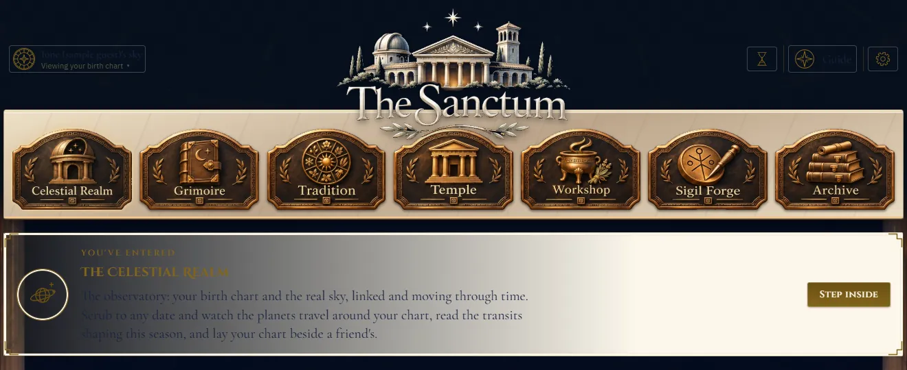
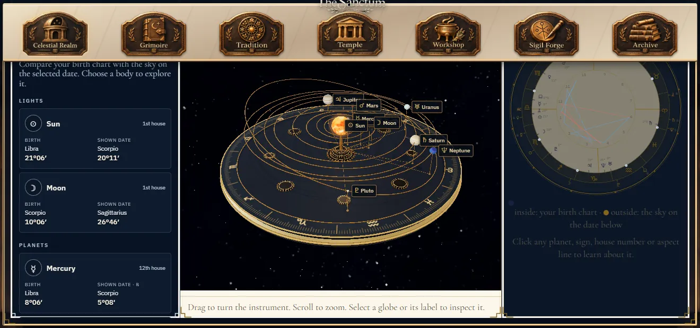
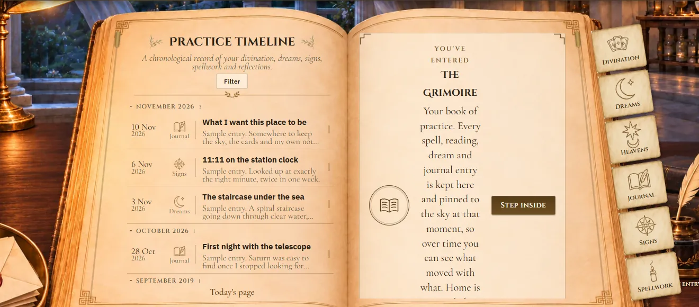

The observatory
Explore your birth chart and move through the real sky. Return to a date, follow the planets and see what was moving when something mattered.
An observatory & a grimoire
A place for your sky.
A record of your practice.
Birth charts, the changing sky and a personal journal, brought together for a small circle of friends.
The guest tour uses a sample profile. No sign-up, and nothing is saved. Accounts are private, by invitation.
Five things to try in the guest tour, in order. I built The Sanctum for myself and a few friends, so I’ve pointed at the design choices I’d want a visitor to catch.
Choose Look around as a guest. You arrive at the estate’s front hall with a sample profile, and a welcome offers a four-minute tour.
Notice: the strip at the bottom. It says nothing is saved, and it stays there in every room.

Scroll down to the bronze instrument and select a globe, or pick a planet from the list beside it.
Notice: the list, the instrument and the chart wheel all show the same moment. Select something in one and the other two follow.

Use the time console above the instrument to move to another date.
Notice: the wheel has two rings. The inside is the birth chart and stays still. The outside is the sky on the date you chose, moving around it.
Choose the Grimoire plaque. It opens as a book on a desk, with a timeline of entries on the left page and tabs for each subject down the side.
Notice: every entry is pinned to its date, so the sky can be rebuilt for the day it was written.

The Guide at the top right starts the tour at any point and walks you through each room.
Notice: the seven plaques are seven rooms. I wanted moving between them to feel like walking through a house, not switching tabs.
Explore your birth chart and move through the real sky. Return to a date, follow the planets and see what was moving when something mattered.
Keep notes, tarot readings and a record of your practice. Gather the moments you want to remember, with the sky as it looked when you wrote them. Choose a working city to find planetary enchantment dates.
Build a personal reference for materials and symbols. Compare photos, filter by intention, keep crystal care sources and link materials to your spells. Import your own database or exchange selected reference entries with friends.
Sign in with email and password or with Google, then use your invitation code to join. Your saved work stays available in your browser and syncs to your account when you are online.
Google sign-in identifies your account. The app does not request access to your Gmail messages, Google Drive files or Google Calendar.